Arts and Crafts
I sew and mend my own clothes, mostly with sashiko, which I taught myself. If any of this gets one more person to pick up a needle, even better.
Hemming and Jeans Repair With Sashiko
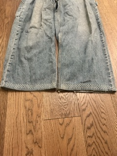


These jeans needed a hem and had a big heel bite to fix. I tried something new, folding the seam inward and sewing sashiko over it. I'm happy with how it came out.
Thrifted Sweater Repair With Sashiko
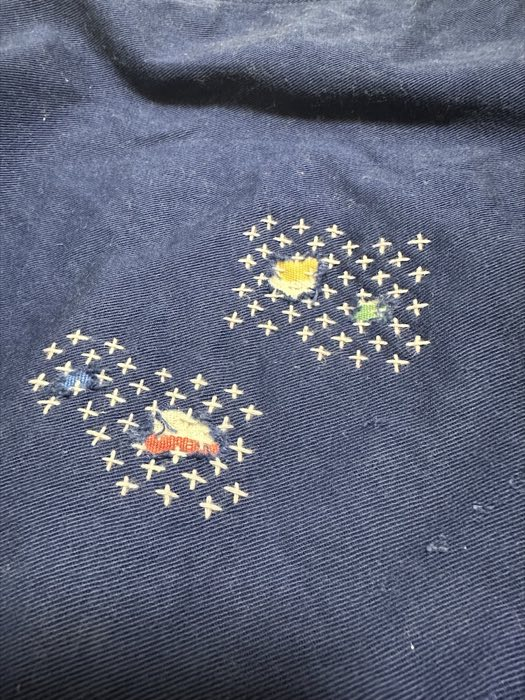
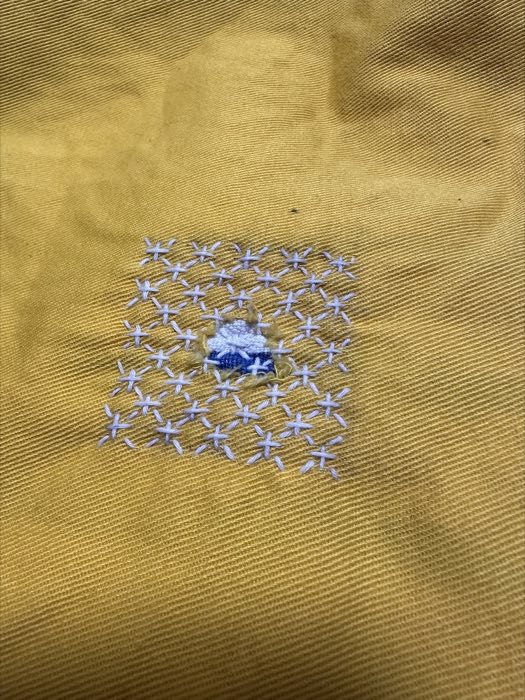
Thrifted a sweater with a couple of small holes in it. A quick, easy sashiko fix.
Jeans Knee Repair With Sashiko Pt. 2
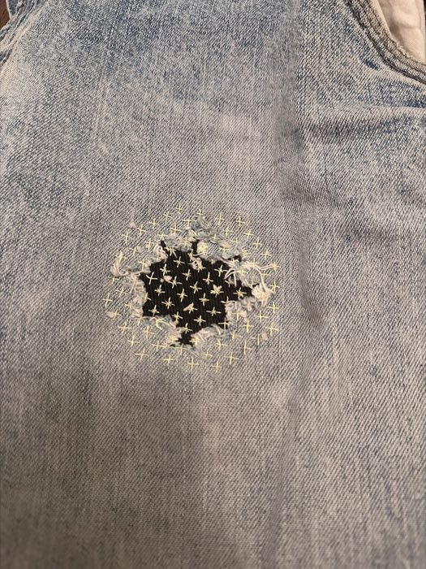
The first knee repair had been bothering me. It felt unfinished, so I redid it, this time using braided fishing line for thread. It is the biggest and longest project I've done. I overcorrected though. I packed in so much fine detail that it only reads up close, and from a few feet away it just looks like a stain.
Jeans Repair With Sashiko
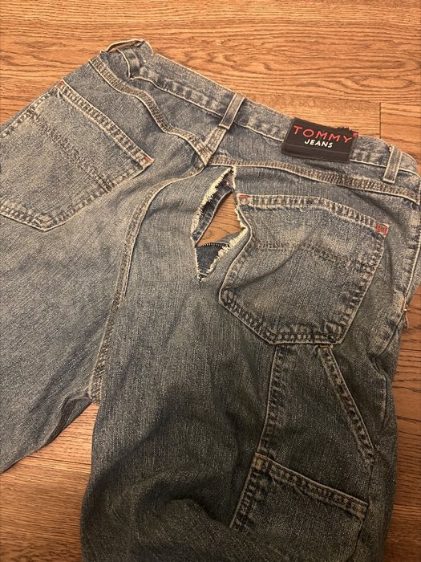
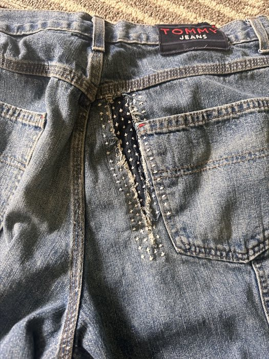
Out fishing on a rainy day, I squatted down to change lures and split a huge rip right down the back of my jeans. Fixed it with sashiko, of course.
Sweater Repair With Sashiko
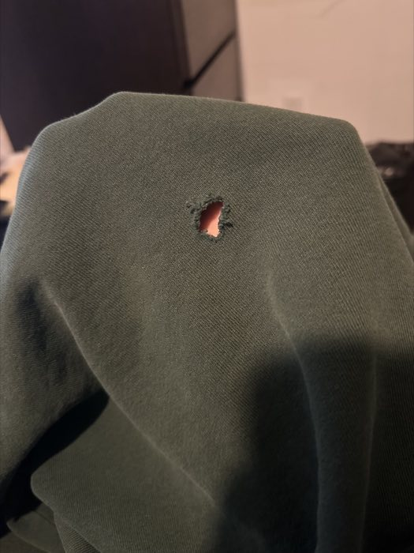
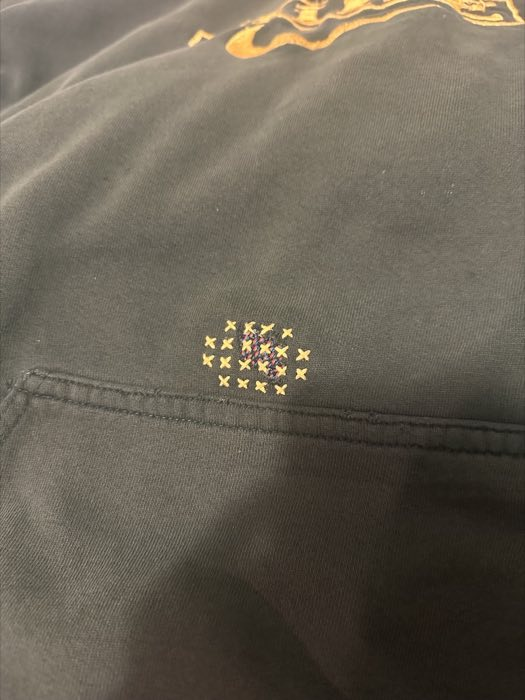
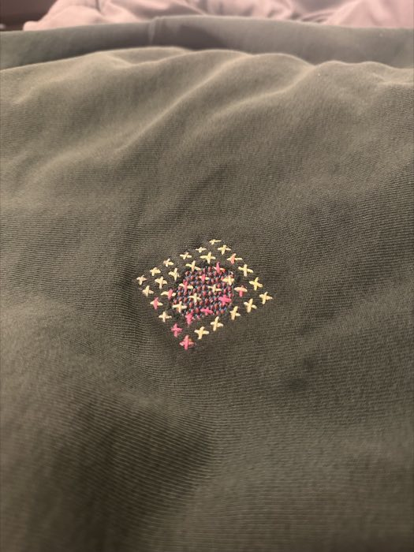
A friend wore out his sweatshirt and asked me to fix it. First time repairing something for someone other than myself. A simple sashiko fix.
Jorts
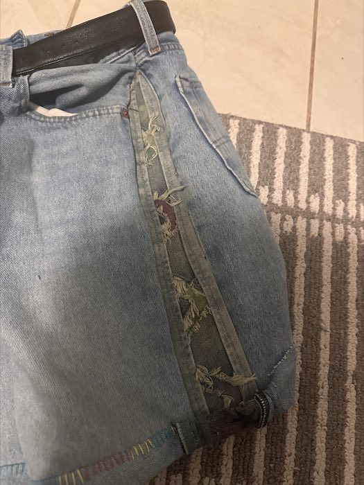
I had a thrifted pair of jeans I'd outgrown, so I cut them into shorts and widened the sides with scrap denim from another pair. Fun to make. I barely ended up wearing them.
Scrunchies
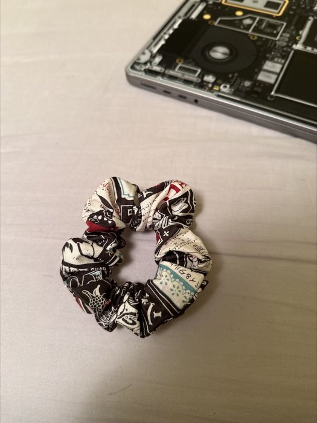
The first thing I made with the sewing machine I got for Christmas. Simple enough to learn on, and fun to make from whatever scrap fabric was lying around. A good way to get comfortable with the machine. The last photo is after about 18 months of use.
Wallet #2
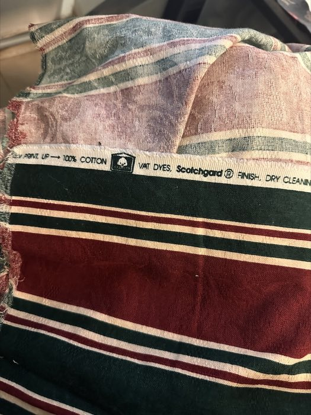
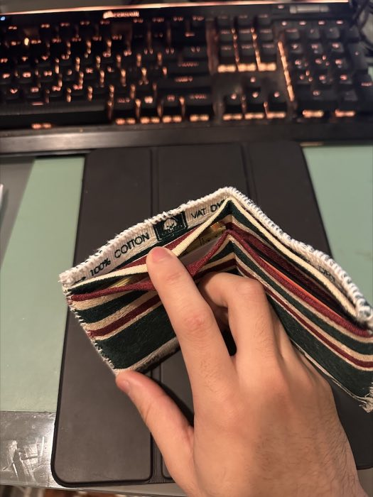
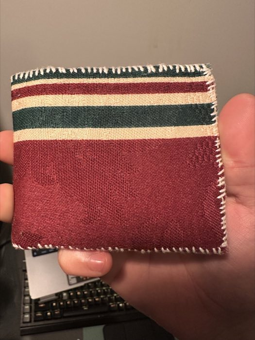
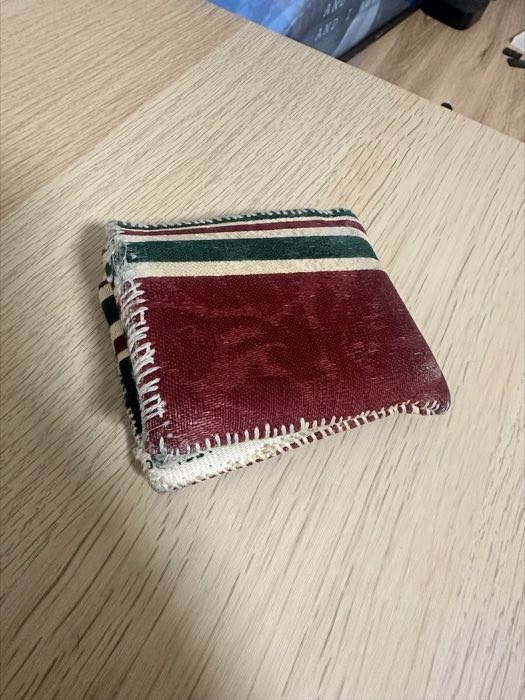
Right after the first wallet I knew I could do better. I used thrifted fabric and everything I'd learned from the first try to get the sizing and alignment right. It is the project I'm most proud of. I've used it every day for over a year and a half, and it is starting to show some patina.
Wallet #1
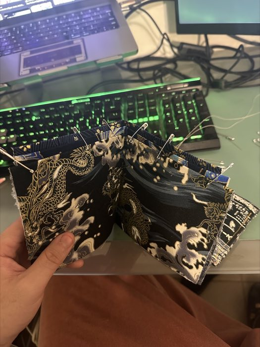
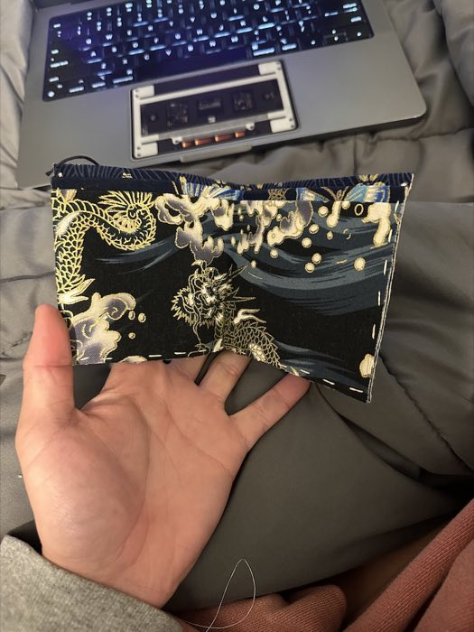
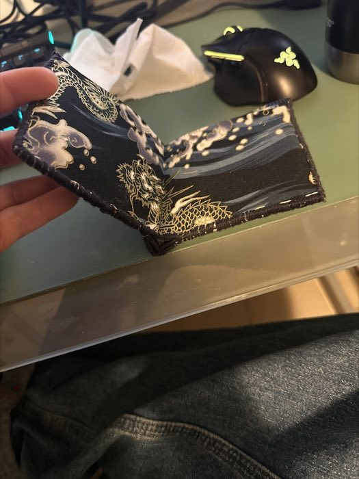
My first attempt at making something from scratch. A bifold wallet sewn from three pieces of fabric. The fabric was too loud and the dimensions came out odd, so it never got much use. Getting the pieces to line up into something functional was harder than I expected.
Jeans Knee Repair With Sashiko
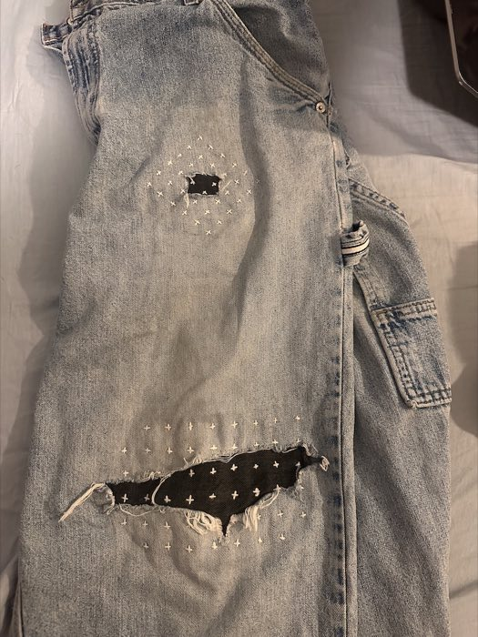
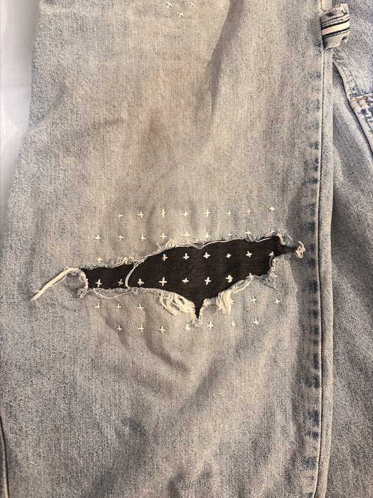
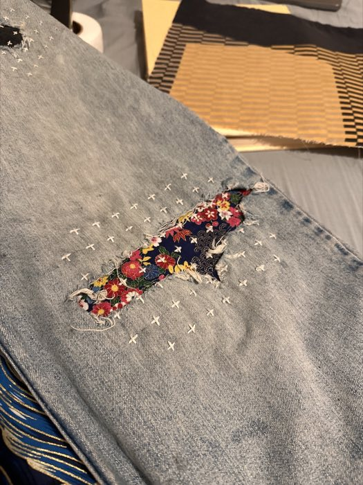
My favourite pair of thrifted jeans, worn through to a giant hole in the knee. I backed it with a contrasting black fabric and stitched a plus-sign pattern over it in sashiko.
Looking back, I spaced the plus signs too far apart. I rushed it.
Experimental Hemming
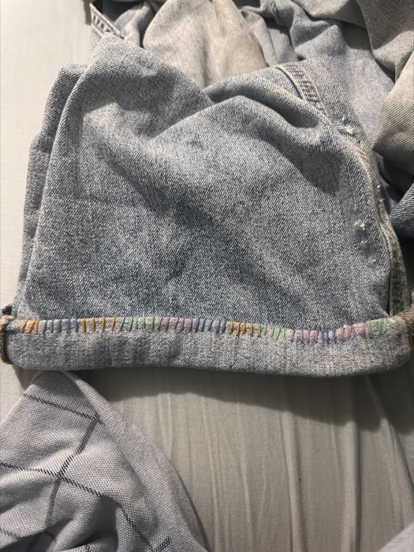
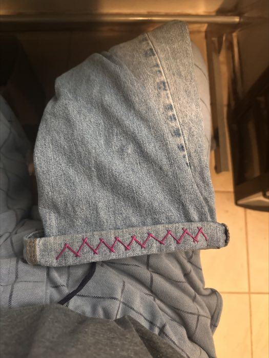
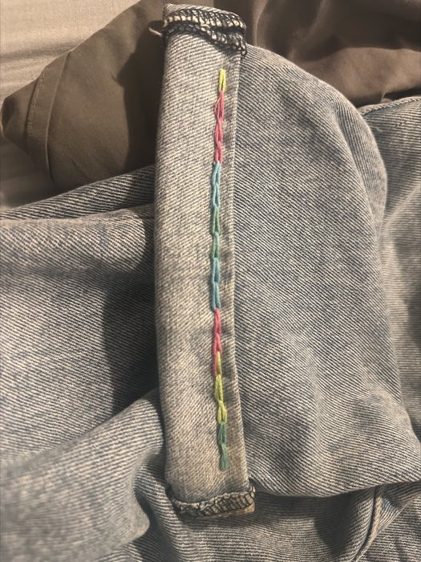
Hemmed a few pairs of jeans and used it as an excuse to try out stitching patterns.
Getting Started
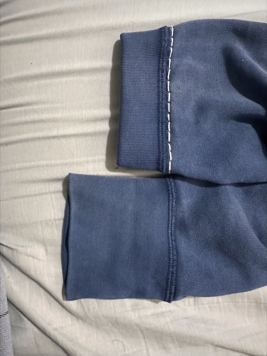
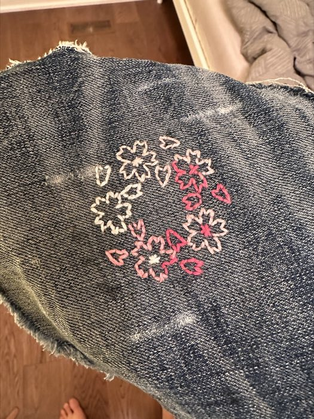
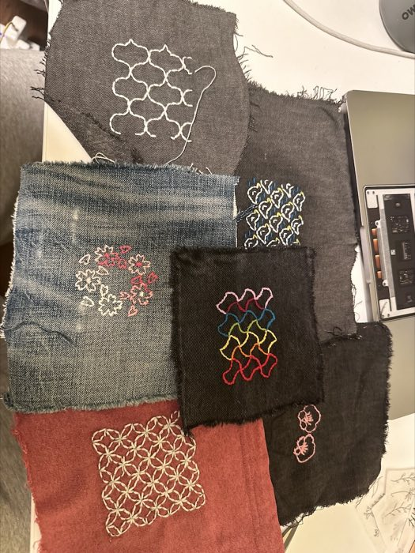
I wanted to shorten the cuffs on a sweater and figured I'd just try sewing it myself. Around the same time I started stitching patterns onto scrap fabric to get a feel for it.